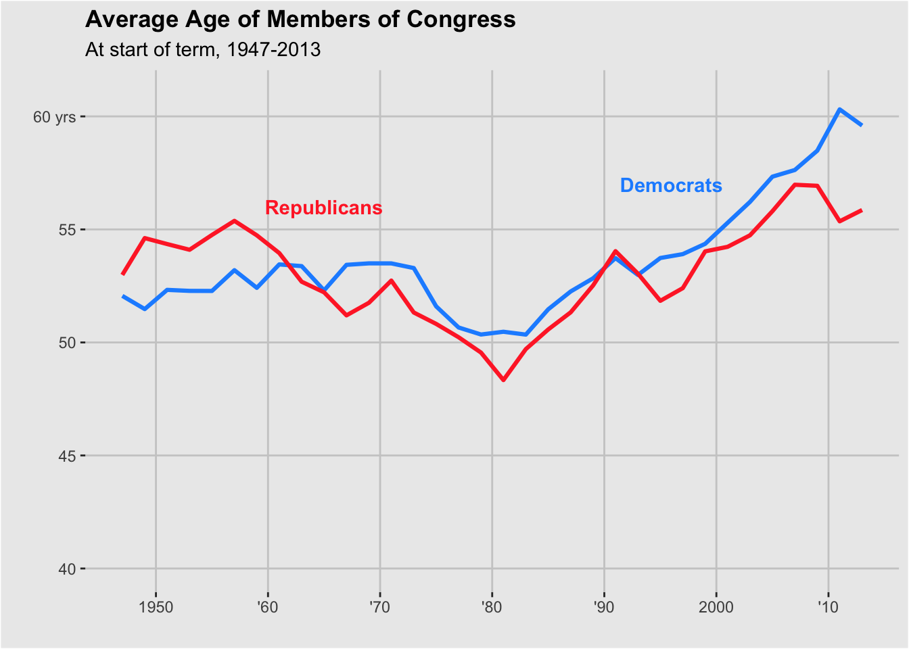

#FiveThirtyEight Figure Full Article Here
###Loading and Checking Data
#packages
library(tidyverse)
library(ggplot2)
library(readr)
library(here)
#setting paths
data_location <- here::here("data","congress-terms copy.csv")
#reading in data
data <- read_csv(data_location)## Rows: 18635 Columns: 13## ── Column specification ────────────────────────────────────────────────────────
## Delimiter: ","
## chr (9): chamber, bioguide, firstname, middlename, lastname, suffix, state,...
## dbl (2): congress, age
## date (2): birthday, termstart##
## ℹ Use `spec()` to retrieve the full column specification for this data.
## ℹ Specify the column types or set `show_col_types = FALSE` to quiet this message.## Rows: 18,635
## Columns: 13
## $ congress <dbl> 80, 80, 80, 80, 80, 80, 80, 80, 80, 80, 80, 80, 80, 80, 80,…
## $ chamber <chr> "house", "house", "house", "house", "house", "house", "hous…
## $ bioguide <chr> "M000112", "D000448", "S000001", "E000023", "L000296", "G00…
## $ firstname <chr> "Joseph", "Robert", "Adolph", "Charles", "William", "James"…
## $ middlename <chr> "Jefferson", "Lee", "Joachim", "Aubrey", NA, "A.", "Joseph"…
## $ lastname <chr> "Mansfield", "Doughton", "Sabath", "Eaton", "Lewis", "Galla…
## $ suffix <chr> NA, NA, NA, NA, NA, NA, NA, NA, NA, NA, NA, NA, NA, NA, NA,…
## $ birthday <date> 1861-02-09, 1863-11-07, 1866-04-04, 1868-03-29, 1868-09-22…
## $ state <chr> "TX", "NC", "IL", "NJ", "KY", "PA", "CA", "NY", "WI", "MA",…
## $ party <chr> "D", "D", "D", "R", "R", "R", "R", "D", "R", "R", "D", "R",…
## $ incumbent <chr> "Yes", "Yes", "Yes", "Yes", "No", "No", "Yes", "Yes", "Yes"…
## $ termstart <date> 1947-01-03, 1947-01-03, 1947-01-03, 1947-01-03, 1947-01-03…
## $ age <dbl> 85.9, 83.2, 80.7, 78.8, 78.3, 78.0, 77.9, 76.8, 76.0, 75.8,…###Now I need to do quite a bit of data management to get it in the form we need to plot
#this creates a new variable for age of each politician using their term start and birthday
data$age <- as.numeric(round((as.Date(data$termstart) - as.Date(data$birthday))/365))
#this creates a new variable that seperates the year in which each politicial started their term
data$year <- substring(data$termstart,1,4)
#this calculates the mean age for each year by party and makes a new dataset that we'll use to plot
new <- data %>%
group_by(year, party ) %>%
summarise_at(vars(age), list(name = mean))
#checking. looks good, but we need to look at only republican and democrat
print(new)## # A tibble: 104 × 3
## # Groups: year [34]
## year party name
## <chr> <chr> <dbl>
## 1 1947 AL 40.5
## 2 1947 D 52.1
## 3 1947 R 53.0
## 4 1949 AL 46
## 5 1949 D 51.5
## 6 1949 I 38
## 7 1949 L 34
## 8 1949 R 54.6
## 9 1951 D 52.3
## 10 1951 I 47
## # … with 94 more rows#here we subset the two parties that we need. we don't need to look at independent
new <- new[ which(new$party=='D' | new$party== 'R'),]
#finally, we make a new year variable that is saved as a date.
new$year2 <- lubridate::ymd(new$year, truncated = 2L)####Plotting
p <- ggplot(new, aes(x=year2, y=name, group=party)) + #plots mean age for each year by party
geom_line(aes(color=party), size=1.1) + #adds the line for each party and colors by party
scale_y_continuous(limits= c(40, 61), breaks=c(40, 45, 50, 55, 60), labels=c("40", "45", "50", "55", "60 yrs")) + #scales the y axis and labels the ticks like they have them in the figure
labs(title= "Average Age of Members of Congress", subtitle= "At start of term, 1947-2013") + #main and subtitle
xlab(" ") + ylab(" ") + #takes away axis labels like they have them
scale_x_date(breaks = scales::breaks_pretty(6), date_labels= c( "'10", "1950", "'60", "'70", "'80", "'90", "2000")) + #date scale and tick labels like they have them
scale_color_manual(values=c('dodgerblue','firebrick1')) + theme(legend.position = "none") + #setting colors
annotate(geom="text",x=as.Date("1965-01-01"), y=56,label="Republicans",fontface="bold", color="firebrick1") + #adding text
annotate(geom="text",x=as.Date("1996-01-01"), y=57,label="Democrats",fontface="bold", color="dodgerblue") + #adding text
theme(panel.grid.minor = element_blank(), panel.grid.major = element_line(colour = "gray",size=0.5)) + #adjusting grid
theme(plot.title = element_text(face = "bold")) + #bolding title
theme(panel.grid.minor.x = element_blank(),
panel.grid.minor.y = element_blank(),
panel.grid.major = element_line(colour = "#cccccc"),
plot.background = element_rect(fill = "#EBEBEB"))
# this brings the title into the figure +
theme(panel.grid.minor.x = element_blank(),
panel.grid.minor.y = element_blank(),
panel.grid.major = element_line(colour = "#cccccc"),
plot.background = element_rect(fill = "#EBEBEB"))## List of 4
## $ panel.grid.major :List of 6
## ..$ colour : chr "#cccccc"
## ..$ size : NULL
## ..$ linetype : NULL
## ..$ lineend : NULL
## ..$ arrow : logi FALSE
## ..$ inherit.blank: logi FALSE
## ..- attr(*, "class")= chr [1:2] "element_line" "element"
## $ panel.grid.minor.x: list()
## ..- attr(*, "class")= chr [1:2] "element_blank" "element"
## $ panel.grid.minor.y: list()
## ..- attr(*, "class")= chr [1:2] "element_blank" "element"
## $ plot.background :List of 5
## ..$ fill : chr "#EBEBEB"
## ..$ colour : NULL
## ..$ size : NULL
## ..$ linetype : NULL
## ..$ inherit.blank: logi FALSE
## ..- attr(*, "class")= chr [1:2] "element_rect" "element"
## - attr(*, "class")= chr [1:2] "theme" "gg"
## - attr(*, "complete")= logi FALSE
## - attr(*, "validate")= logi TRUE
####Comparing###Final Thoughts: This is only about 100 lines of code and a fairly simple plot, but it was a journey getting the tick marks and everything as close as I could get it to the original. Definiteley took me a lot of googling and time, but I feel like I understand a lot more about the infinite options of R graphics.